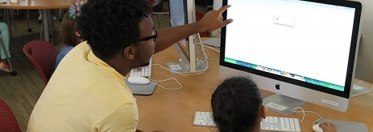

Leadership
IT Leadership
Led a team of six students to with the goal of increasing awareness, involvement, and participation in several on campus organizations. The most successful club was Campus Girl Scouts. For this organization I made several in class announcements, produced flyers, and conducted a social media campaign to reach out to potential members. I also promoted this organization through several avenues to increase awareness. Furthermore, I participated as a volunteer in a code camp to help teach a group of Firl Scouts how to code in Ruby. I also worked an on-campus organization called Community Outreach Group. In both organizations we were able to increase membership by at least 50% and also increased the social media following of both by at least 50%.
ReAct
Co-led a project to help rollout a new app called ReAct. This app focuses on providing an avenue for users to communicate with each other in crisis situations. My duties as the co-lead were to lead the social media team. This consisted of making sure our social media platforms were consitently being updated with new information and our progress. I also helped design our website and organized team meetings.